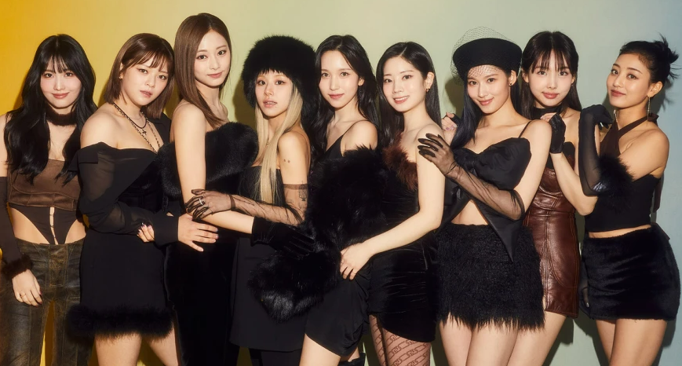

Galeria

Publicidad

Publicidad

La sensación del K-Pop que ha logrado cautivar a la audiencia del mundo con su fórmula única de talento, carisma, y sus ritmos adictivos. Este grupo surcoreano compuesto por nueve talentosas integrantes ha desafiado las barreras culturales con su música
Desde su debut en el 2015, TWICE ha acumulado un impresionante numero de seguidores, ademas de establecer récords tanto en Corea del Sur como en todo el mundo. Su estilo diverso y versátil ha llevado a la creación de éxitos como "Cheer Up", "The feels" y "Talk that Talk", que se han convertido en himnos del K-Pop. Con un enfoque en la creatividad, posibilidad y diversión, TWICE ha demostrado ser mucho más que un grupo musical.
TWICE ganó fama en 2016 con la canción "Cheer Up", la cual se ubicó en el primer puesto de Gaon Digital Chart y se convirtió en el sencillo con las mejores ventas de ese año. Tal fue el éxito que la canción obtuvo el premio a "Song of The Year" en los Melon Music Awards y en los Mnet Asian Music Awards.
Video
¡MISAMO ha vuelto oficialmente!
¡TWICE rompe Spotify y hace historia en 2026!
THIS IS FOR, ¡Un tour mundial en potencia!
¡TWICE ganó en los MAMA otra vez!
2026 A.S
Todos los derechos reservados - Azul Silvana Barragan González